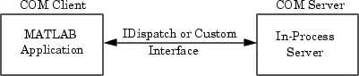
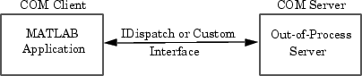
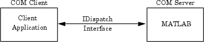
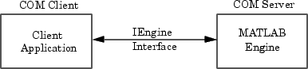

Supported Client/Server Configurations
You can configure MATLAB® to either control or be controlled by other COM components. When MATLAB controls another component, MATLAB is the client, and the other component is the server. When another component controls MATLAB, MATLAB is the server.
MATLAB Client and In-Process Server

The In-Process Server exposes its properties and methods through the IDispatch (Automation) interface or a Custom interface, depending on which interfaces the component implements. For information on accessing interfaces, see COM Object Interfaces.
Any COM component that has been implemented as a dynamic link library (DLL) is also instantiated in an in-process server. That is, it is created in the same process as the MATLAB client application. When MATLAB uses a DLL server, it runs in a separate window rather than a MATLAB figure window.
To learn more about working with MATLAB as a client, see Create COM Objects.
MATLAB Client and Out-of-Process Server

In this configuration, a MATLAB client application interacts with a component that has been implemented as a Local Out-of-Process Server. Examples of out-of-process servers are Microsoft® Excel® and Microsoft Word programs.
As with in-process servers, this server exposes its properties and methods through the IDispatch (Automation) interface or a Custom interface, depending on which interfaces the component implements. For information on accessing interfaces, see COM Object Interfaces.
Since the client and server run in separate processes, you have the option of creating the server on any system on the same network as the client.
If the component provides a user interface, its window is separate from the client application.
To learn more about working with MATLAB as a client, see Create COM Objects.
COM Implementations Supported by MATLAB
MATLAB only supports COM implementations that are compatible with the Microsoft Active Template Library (ATL) API. In general, your COM object should be able to be contained in an ATL host window to work with MATLAB.
Client Application and MATLAB Automation Server

MATLAB operates as the Automation server in this configuration. It can be created and controlled by any Microsoft Windows® program that can be an Automation controller. Some examples of Automation controllers are Microsoft Excel, Microsoft Access®, Microsoft Project, and many Microsoft Visual Basic® and Microsoft Visual C++® programs.
MATLAB Automation server capabilities include the ability to execute commands in the MATLAB workspace, and to get and put matrices directly from and into the workspace. You can start a MATLAB server to run in either a shared or dedicated mode. You also have the option of running it on a local or remote system.
To create the MATLAB server from an external application program, use the appropriate function
from that language to instantiate the server. (For example, use the Visual Basic
CreateObject function.) For the programmatic identifier, specify
matlab.application. To run
MATLAB as a dedicated server, use the
matlab.application.single programmatic identifier. See Shared and Dedicated Servers for more information.
The function that creates the MATLAB server also returns a handle to the properties and methods available in the server through the IDispatch interface.
Note
Because VBScript client programs require an Automation interface to communicate with servers, this is the only configuration that supports a VBScript client.
For More Information
To learn more about working with Automation servers, see MATLAB COM Automation Server Interface.
Client Application and MATLAB Engine Server

MATLAB provides a faster custom interface called IEngine for
client applications written in C, C++, or Fortran. MATLAB uses IEngine to communicate between the client
application and the MATLAB engine running as a COM server.
Use the MATLAB Engine API functions to start and end the server process, and to send commands to be processed by MATLAB.